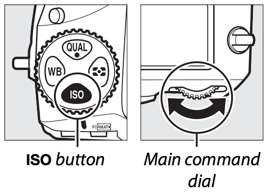
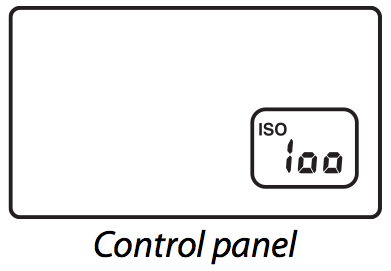
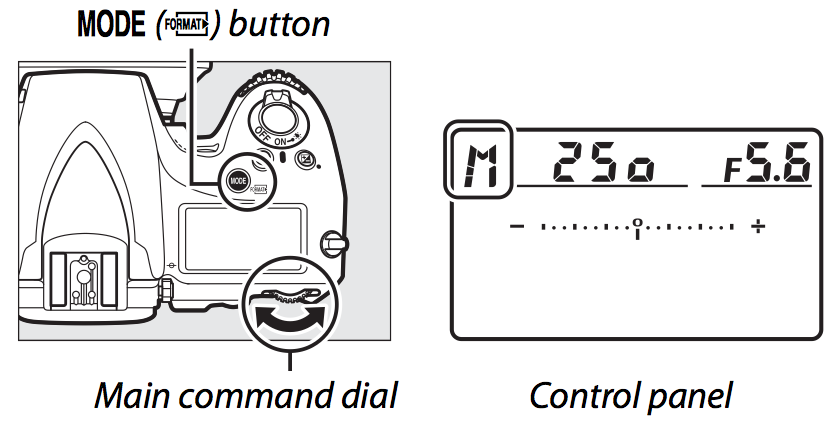
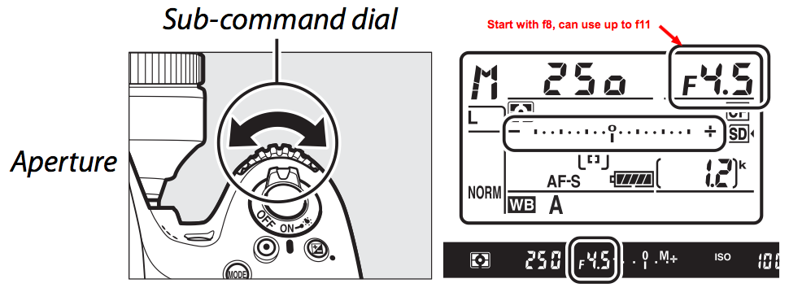
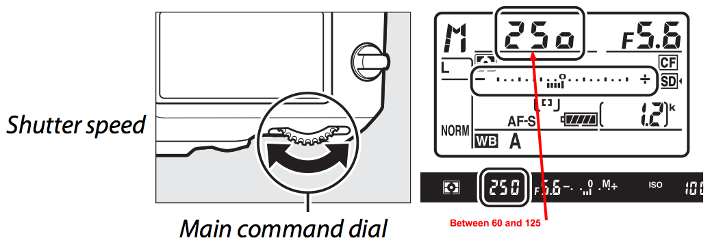
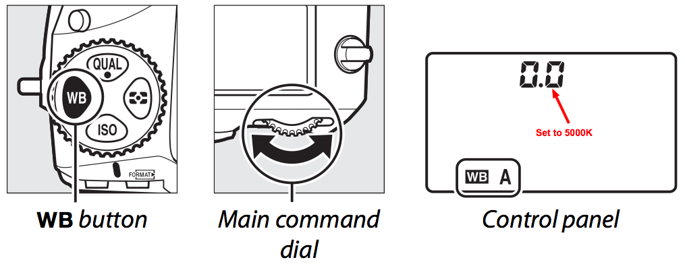
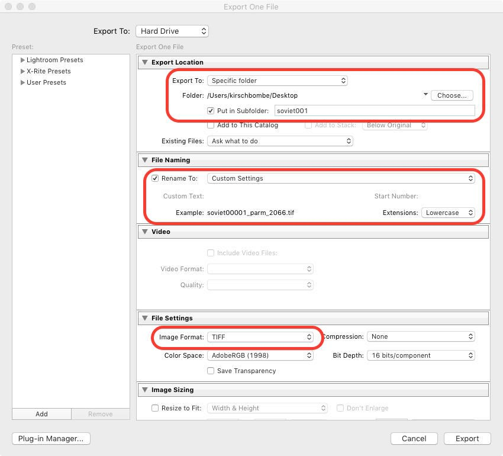
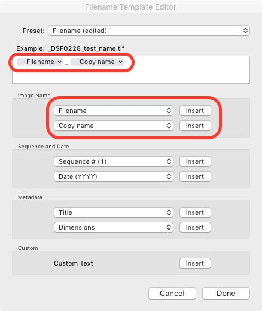

New Session Checklist
Camera Settings
Make Sure:
- Focus is set to A on lens
- ISO is set to 100


- MODE is set to M

- Aperture is set between f8 and f11 (start with f8)

- Shutter Speed is set between 1/60th and 1/125th (60 -125 in display) (start with 60)
-

- White Balance (WB) is set to 5000K

- Image Quality (QUAL) is set to RAW
Camera Setup
- Attach camera to tripod
- Attach shutter remote to camera
- Attach TTL flash remote to top of camera
- Remove camera lens cap
- Link camera to laptop
- Open and Setup Lightroom
- Make sure Lightroom opens with the catalog you are working with (ex. “soviet_posters” or “film_posters”)
- From the File menu, choose Tethered Shooting, then Start Tethered Shooting
- Settings:
-
- Give the session a name (ex. soviet02, film03, etc.)
- Next to Template, choose Edit from the pulldown menu
- In the text box, delete the pattern that is there
- Type in the filename prefix followed by an underscore “_” (ex. soviet_ )
- In the Number section, choose Sequence # (00001) and Insert
- The template should like something like: “soviet_ Sequence # (00001)
- Click on Done
- Click OK
Setup the Light Battery Pack & TTL Flash Remote
On
Battery Pack:
- Check to make sure lights are plugged into battery pack
- Turn on battery pack
- Set channel on battery pack to 1
- Press SYNC until set to AIR
- Set light levels to 8 (start with 8, then move up or down to adjust as needed)
On
TTL Flash Remote:
- Turn TTL Flash Remote ON
- Set channel to 1 (or the same channel set on battery pack)
- Set MODE to MAN
Taking the photographs
- First, take one photograph with the ColorChecker Passport
- Begin shooting each poster
- Mount poster
- Take photograph
- Record the localID (number from the back of poster) in the “Copy Name” field in the Metadata section
- Repeat until all posters are photographed
Finishing the shoot
- Put lens cap on camera lens
- Remove camera from tripod
- Check batteries on camera & TTL Flash Remote - do they need to be charged?
- Turn off camera & TTL Flash Remote
- Remove and charge (camera) or replace (TTL Flash Remote) batteries if needed
- Turn off light battery pack
- Press white button on light battery pack to discharge remaining power
- Unplug light cables from light battery pack
- Remove battery from light battery pack and charge
Post-processing (in Lightroom)
- In the Develop tab, crop images and straighten
Create Color Checker Profile for session
- Export image with Color Checker to Desktop as DNG
- Select image
- From the File menu, choose Export
- Settings:
-
- Export to: Desktop
- Image Format: DNG
- Click the Export button (this will save the reference image on your desktop)
- Open ColorChecker Passport Software
- Drag and drop image into ColorChecker Passport window
- Wait for profile to load
- Click on the “Create Profile” button
- Name the new profile with the session name (ex. soviet001)
- Close ColorChecker Passport
- Close and re-open Lightroom to load the new profile
Apply ColorChecker profile to all images in session
- Open Lightroom, select Develop tab
- Select all images in session
- In the Camera Calibration section, choose the Profile you just created from the pull-down menu to apply to all selected images (ex. soviet001)
Export image batch as TIFF
- Select all images in current session
- From the File menu, choose Export
- Settings:

- Under Export Location, choose destination to export files (Desktop or an external drive), check “Put in a Subfolder”, and give new folder a name
- Under File Naming, check “Rename To:” and choose Edit from the pull-down menu
- In the Filename Template Editor window, add “Filename_Copy Name” to the template editor using the Insert buttons (see image below), then select Done

- In File Settings section, set file extension to TIFF
- Export
Give the external drive with the new batch of images to the metadata team
Done!